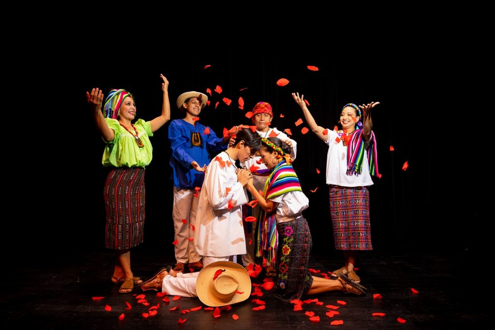
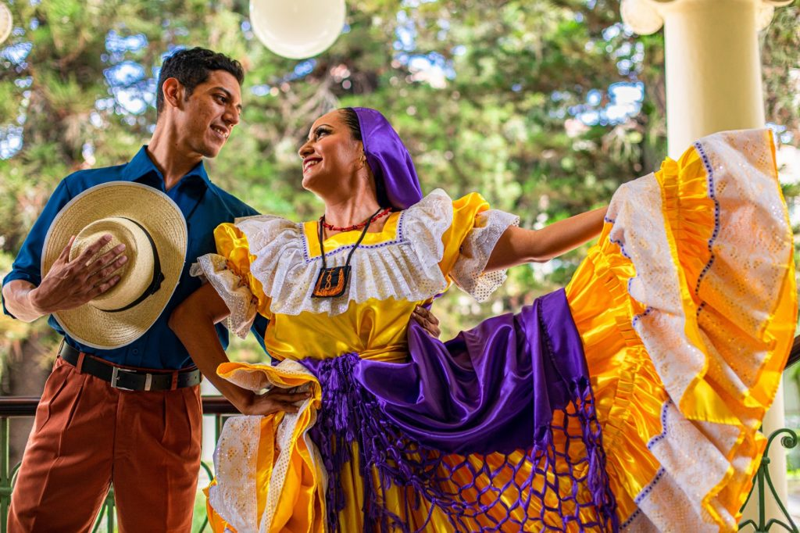

Historia
Antes de la llegada de los españoles, el territorio que hoy en día se conoce como El Salvador era un espacio habitado predominantemente por grupos de habla náhuat conocidos como pipiles. Durante la época prehispánica fue sucesivamente habitado por los pueblos xincas, mayas, lencas y mangues. Estudios precolombinos dan muestra de la importancia de la música, sobre todo en expresiones rituales en los que se empleaban tambores y trompetas. La musicóloga Maria de Baratta da muestra de la construcción de instrumentos complejos en esa época como el teponahuaste, las flautas fálicas con bola deslizante de Quelepa o la ocarina Tecoalistli. Un grupo notable de música nativa es talticpac, que significa en castellano “sobre la tierra”.
Con la venida de los españoles, la música clásica europea y la española se mezclaron con los estilos nativos. Los códigos musicales precolombinos fueron reemplazados por otros, cambiando sus significados, funcionalidad, formas de aprendizaje, transmisión, difusión e intercambio.
Una canción nativa muy conocida en El Salvador es "Danza del Teponahuaste", pero a la venida de los españoles tomó el nombre de santo tingo con el fin de seguir adorando a los dioses que los indígenas poseían y lo cual era prohibido por la iglesia católica.
La música en el periodo colonial fue promovida y apoyada por tres poderes:
- Las autoridades indígenas que promovían la transmisión de las tradiciones de una generación a otra.
- La iglesia católica, a través de la música de corte religioso, que no necesariamente debía ser música sacra, sino que alababa o hablaba de Dios.
- Las instancias del Reino de España en las provincias.
- Conjunto de Pardos del Barrio Veracruz, Sonsonate (1762)
- Conjunto de militares del Guaymoco, Sonsonate (1762)
- Conjunto de mulatos, negros e indios de Santo Thomas Tesaquangos (1768)
- Grupo vocal instrumental de Santiago Nonualco (1789 - 1802)


El 22 de noviembre de 1824 se constituye la República Federal de Centro América y el estado del Salvador era uno de sus cinco Estados. En esta época se registran varias iniciativas para la institucionalización de la música, como la fundación de la primera banda marcial, la fundación de la primera escuela de música (1845) gracias a la llegada del l violinista guatemalteco José Escolástico Andrino y la creación de la primera orquesta sinfónica (1847). Bajo la administración del general Gerardo Barrios (1859-1863) se estimuló la creación de bandas regimentales. El repertorio, generalmente constituido por danzas de salón y marchas, atrajo públicos diversos a las plazas de las principales ciudades. En el último cuarto de siglo se fundan las sociedades filarmónicas de San Salvador (1875) y de San Vicente (1858). En el Teatro Nacional o el Teatro Colón de San Salvador se realizaban concierto con las bandas en veladas que incluían recitales de canto y poesía.